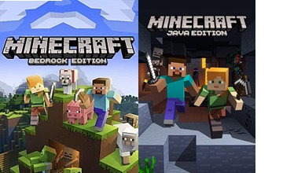

Bienvenue.
Ici, vous pourrez consulter les différentes actualités concernant le serveur. Nous vous invitons à consulter cette page
régulièrement.
Notre serveur Minecraft Java Edition est désormais joignable par les joueurs jouant sur Minecraft Bedrock (mobile, console
, édition Windows 10, etc.) !
Pour savoir quelle est la procédure et les manipulations spécifiques, cliquez ici !
